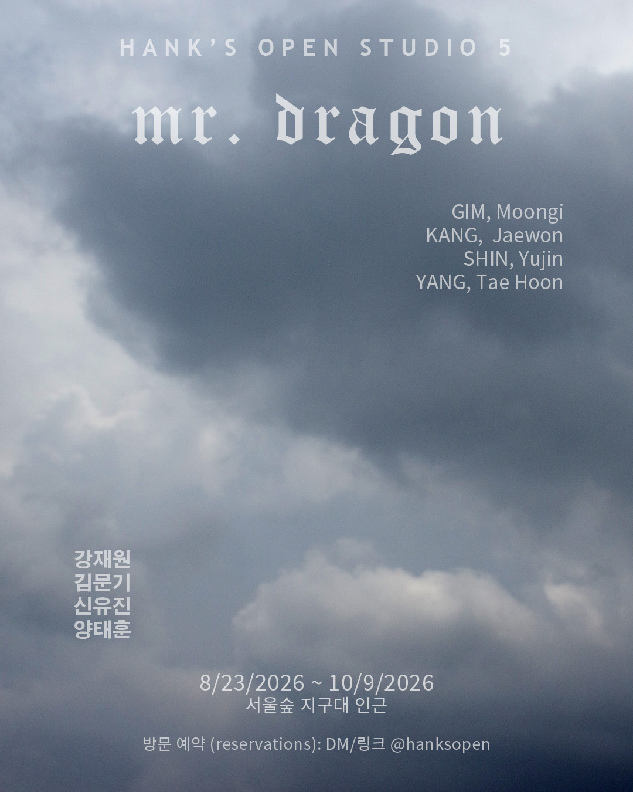
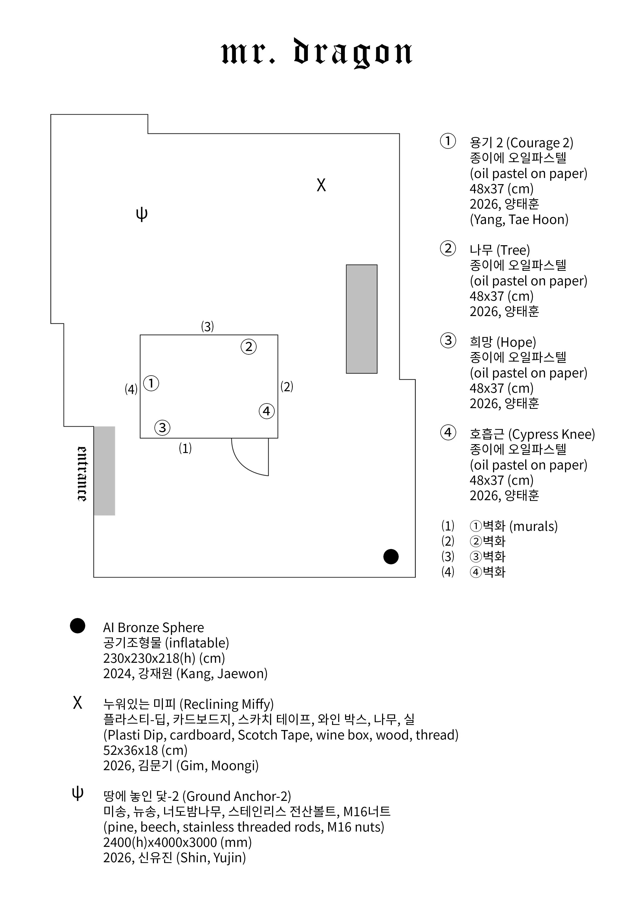

artist-run space in Seoul, ROK

참여작가
강재원 @fill_air_extreme_
김문기 @moongigim
신유진 @u_side_
양태훈 @taehoonyangah
Hank's Open Studio의 2026년 여름 기획은 쌍둥이 전시로 확장되었다. 옥상 공간을 야외 전시장으로 사용하여 실내 공간의 《그렌델 엄마》와 동시에 개최되는 《용님》은 《그렌델 엄마》의 내용을 이어받으며 『그렌델』에서 묘사되는 용과의 조우에 밀착한다.
가드너의 용은 톨킨의 1937년 소설 『호빗』을 통해 자리 잡은 수다스럽고 교만한 용 캐릭터 전형의 답습으로, 이는 『베오울프』를 연구한 톨킨의 창작물이 어찌 보면 다시금 베오울피아나(Beowulfiana)를 통해 『베오울프』 안으로 재편성되는 모습을 보여준다.
가드너의 『그렌델』에서 용의 독백은 빌런의 궤변으로써, 그렌델의 의식에 니힐리즘을 주입하는 역할을 한다. 용의 독백은 작 중 상당한 권위와 매력을 발산하는데, 용이 가진 과거와 현재, 그리고 미래를 관통하는 지각과 결정론, 인과성, 시간성 등의 철학적 논제를 설교하는 인지적 능력은 그의 물리적 거대함과 더불어 절대적 우위의 초월적 존재를 그린다. 용과의 접촉 이후 그렌델의 의식이 점차 염세적 허무주의로 미끄러짐은 필연적이라고 할 수 있다.
모든 걸 안다는 건 자신의 최후도, 자신을 포함한 서사의 결말과 구조도 알고 있다는 뜻이겠다. 가드너의 『그렌델』은 원작 『베오울프』에서 철저히 불가지의 영역인 괴물들의 내면세계를 열어젖히며 "괴물과 비평가"의 논지를 넘어서지만, 일견 영웅에게 제물로 바쳐지는 역할에 귀속된 그들의 내면은 결국 공허할 수밖에 없어 보인다.
